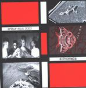

| Artist: | Arthur Ellis 2000 |
| Title: | Alphomega |
| Label: | Faceplant/SOCAN 2001-1 |
| Length(s): | 35 minutes |
| Year(s) of release: | 2001 |
| Month of review: | [02/2002] |
| 1) | Necessary Illusions | 3.53 |
| 2) | Homo Consumerus | 4.15 |
| 3) | Hello Momma | 3.56 |
| 4) | Urban Myth | 4.23 |
| 5) | Hidden Symmetry | 4.48 |
| 6) | Lizard | 3.24 |
| 7) | Alien To Me | 3.39 |
| 8) | Dreams Of Flesh & Sand | 6.55 |
| 9) | ?? | 0.13 |
Homo Consumerous is more up-beat with the guitar sounding more threatening. The chorus is rather rough, the rest of the song poppy. The intermezzo is atmospheric, the synths sound typically very eighties.
Hello Momma is typical New Wave music with lots of keyboards, but poppy throughout and this time a bit of vocoding. I was reminded of the Andrew Sisters at times (?) Urban Myth is a bit heavier again with gurgling keyboards and some nice twists in the vocal line. sounds quite threatening on the whole and one might spot a hint of psyche here and there.
Somewhat more progginess we find on Hidden Symmetry which has cosmic synths and quite a bit of variation. Not all to the good however. A horn section from a box can be heard on Lizard which is simply too frolic for my tastes. The New Wave is present under a barrage of heavy rhythm guitar on Alien To Me.
The final track is not only the longest but also the most appealing. The opening is a slow atmospheric one with modern sounding keyboards and a beat. Then we get a song like the others just before them with again a rather heavy handed guitar. The Ha-haha part is really distinctive, somewhat maniacal. The song also exhibits a Mark Kelly style keyboard solo.